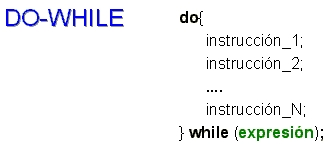
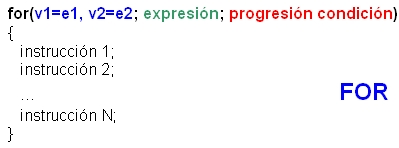
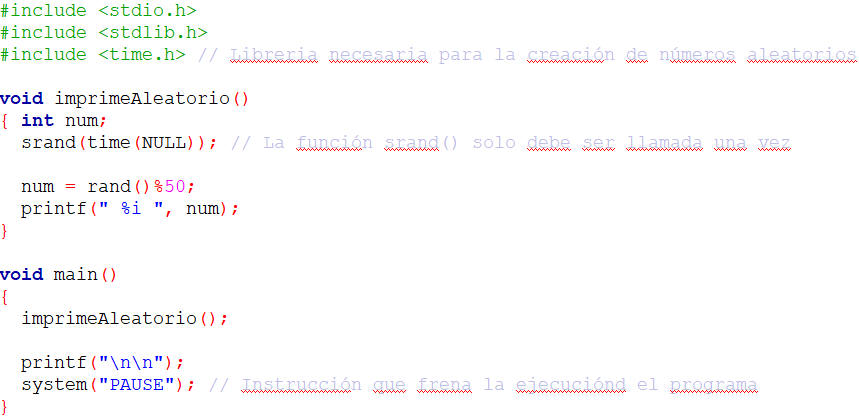
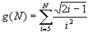

Objetivos:
- Que apliques los conocimientos sobre el ciclo for y do-while en
le desarrollo de un programa
- Que seas capaz de utilizar funciones y procedimientos, acompañados
de las estructuras "for" y "do while"
- Que desarrolles la habilidad de de hacer frente a los inconvenientes
del uso de estructuras cíclicas, es decir, en caso de que una función
se cicle, deberás ser capaz de identificar el elemento que provoca
este mal funcionamiento
- Que ejercites la habilidad de hacer frente a los mensajes de error
que envía la herramienta de desarrollo
- Que refuerces las habilidades de sociabilización mediante
el proceso de trabajo en equipo
- Que ayudes a tus compañeros a encontrar la mejor solución
a los programas

Forma de
trabajo:
Actividad en equipos colaborativos e individual

Tiempo estimado:
90 minutos

Instrucciones:
- Intégrate con tu equipo colaborativo y sigue las indicaciones
del profesor.
- Junto con tus compañeros de equipo, analiza cada uno de
los ejercicios que se presentan a continuación. Identifiquen, en
equipo, cual sería el algoritmo para la solución de cada uno
de los ejercicios. Recuerden documentarlos en sus hojas membretadas.
- De manera individual escribe un programa en C para cada uno de
los ejercicios. Recuerda basarte en el algoritmo que se generó en
el equipo.
- Una vez que hayas terminado tu programa, es tu responsabilidad
ayudar a tus compañeros de equipo a que terminen su programa.
- Entrega, vía la plataforma, los archivos *.c que
contengan los programas en C.
Utiliza los siguientes esquemas como apoyo para desarrollar tu laboratorio:


- La función
rand( ) de la librería
<stdlib.h>, regresa
un número entero aleatorio (es decir, al azar) utilizando la operación
% x, para generar un número
entre 0 y (x-1).
- El siguiente programa
despliega un número aleatorio entre 0 y 49. Utiliza esté código
como ejemplo para desarrollar la función numeros_aleatorios.

Ejercicios
Construye un
programa completo en C libre de warnings y errores, que incluya los siguientes
procedimientos y funciones, haciendo uso del ciclo for:
- El procedimiento aleatorios1,
que despliega en pantalla 50 números aleatorios entre 0
y 70.
- El procedimiento aleatorios2,
que despliega en pantalla 30 números aleatorios entre 30
y 80.
- El procedimiento aleatorios3,
que despliega en pantalla 20 números aleatorios entre -15
y 40.
- La funcióng que evalúe la siguiente
sumatoria :

- El procedimiento imprimeNcadaVez,
que utilizando un do-while, desplegará en pantalla N números
consecutivos. Cada N números el procedimiento deberá
preguntar al usuario si desea continuar, de ser así seguirá
con la impresión de la secuencia de números siguientes en
pantalla; en caso contrario termina el procedimiento.
Por ejemplo:
- Si N =
5, imprimeNcadaVez(5); deplegará en pantalla lo siguiente:
1 2
3 4 5
Desea continuar
(S/N): S
6 7 8 9 10
Desea continuar
(S/N): S
11 12 13
14 15
Desea continuar
(S/N): N
Fin del procedimiento....
- Si N =
8, imprimeNcadaVez(8);
deplegará en pantalla lo siguiente:
1 2
3 4 5 6 7 8
Desea continuar (S/N): S
9 10 11 12 13 14 15 16
Desea
continuar (S/N): S
17 18 19 20 21 22 23 24
Desea
continuar (S/N): N
Fin del procedimiento....
- El procedimiento menu, que despliegue el siguiente menú en pantalla:
MENU
.
a. Numeros aleatorios 1
b. Numeros aleatorios 2
c. Numeros aleatorios 3
d. Funcion G
e. ImprimeNcadaVez
s. Salir
.
- En la sección del "main()" construya un programa
completo en C que utilice el procedimiento menu y de acuerdo a la
opción seleccionada le dé la oportunidad al usuario de ejecutar
cualquiera de las funciones que han sido construidas. Debes de utilizar el
ciclo do-while y el estatuto de control
switch para el desarrollo
de un menú que incluya la opción de Salir, y cicle el programa
hasta que el usuario seleccione dicha opción.
- Recuerda que la captura de datos y validación de valores
debe ser realizada en la sección del "main ( )", pues las funciones
NO pueden realizar las tareas de validación o captura de datos.
- Guarda el archivo con el nombre F_matrícula.c

Forma de
entrega:
- Envía tu laboratorio por blackboard, no se aceptarán
laboratorios por ningún otro medio.
- Envía solo tus archivos *.c.
- Los laboratorios enviados posteriormente a la fecha límite
NO SERÁN CALIFICADOS.
.
INSTRUCCIONES PARA ENVIAR TU LABORATORIO
POR BLACKBOARD
- Haz clic en la actividad de Entrega de Laboratorio.
- Escribe comentarios si lo consideras necesario.
- Da clic en el botón de Browse My Computer y localiza
el archivo *.c. Si necesitas agregar más archivos repite este
proceso hasta agregar todos tus archivos.
- Haz clic en Submit.
- Al indicar que ha subido exitosamente hacer clic en OK.
. |